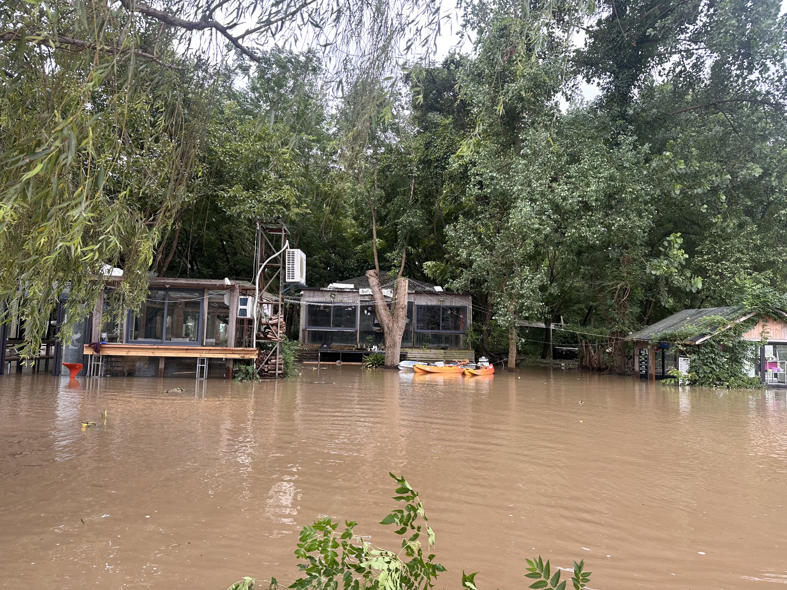
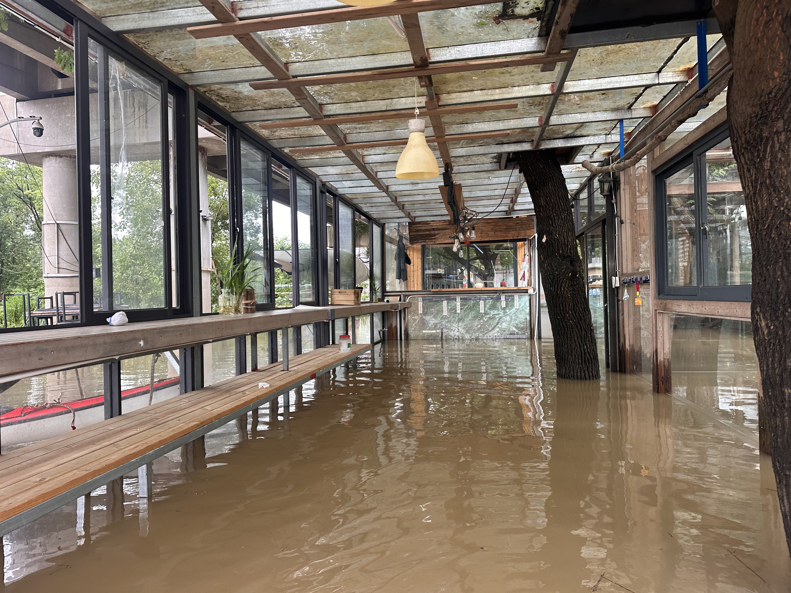
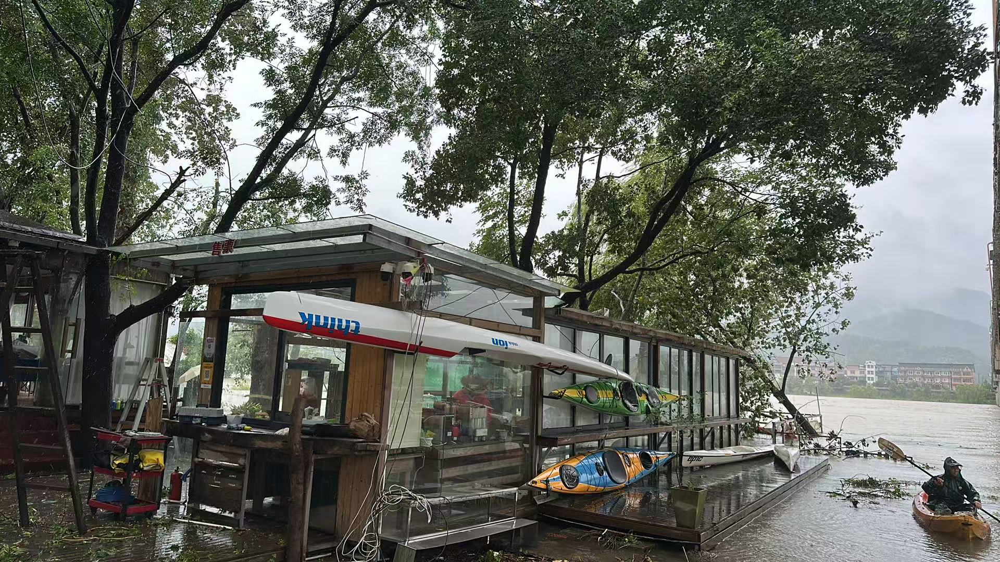
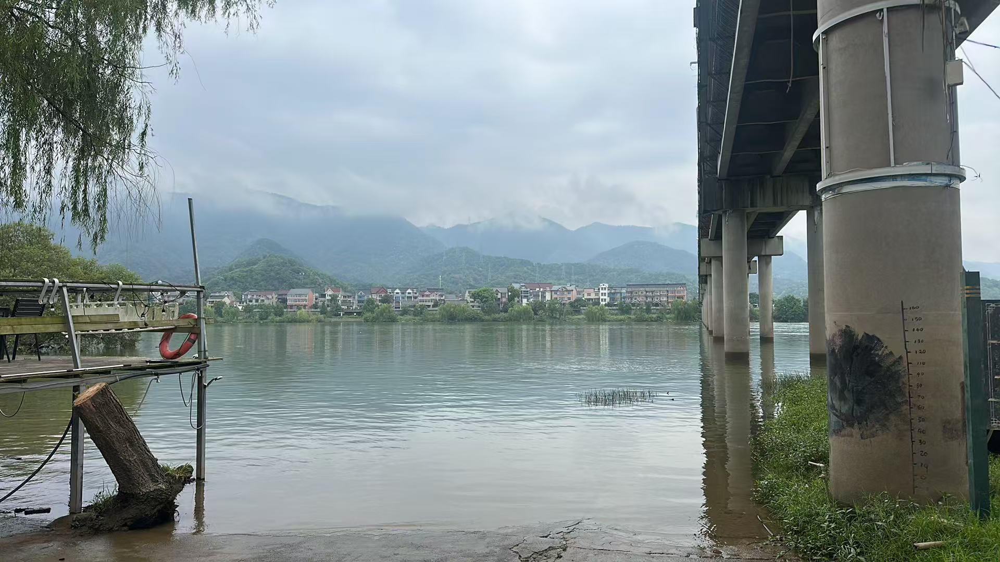

2026 汛期两次淹没事件的归因、预警模型与淹没线定标
| 7/13 巴威正面过境 | 8/9 白海豚外围 | |
|---|---|---|
| 流域雨量（富春江电站，事件过程） | 206mm / 2天 | 242mm / 3天 |
| 肖岭水库（桐庐，渌渚江侧） | 157mm / 2天 | 8/9 单日 190mm |
| 坝下 24h 均值峰 | 10.78（全年最高） | 8.21 |
| 坝下 ≥8.6（红泄洪级）时长 | 36h | 0h |
| 渌渚镇支流 6h 涨幅 | +1.01 | +1.42 |
| 岛上山溪 6h 涨幅 | +0.14（溪流受基流/上游小库缓冲，非降雨代理） | +0.46 |
| 新安江电站水位 | 7/13 起入库 +1.0m（上游来水） | 全程持平（未放水） |
| 新桐乡峰值 | 7.61 | 7.24 |
判断：两次淹没都是自然暴雨洪水，水库"过度预泄"的指控不成立。
对预警模型的启示：暴雨过流型事件坝下爬升快、起步早，黄警天然提前量大（7 月 +19h）； 难的是 8 月那种坝下不动、支流缓涨的型式——为此已把渌渚镇黄阈值降至 0.5（微涨即黄， 首黄 15h→39h）、新增渌渚镇动量红判据（首红 5h→9h）。
处暑（8/23）之后汛情基本结束，但 9 月实测数据里有两个表面相似、本质相反的案例：
| 9/2 渌渚江脉冲 | 9/10–11 潮汐涟漪 | |
|---|---|---|
| 渌渚 6h 涨幅 | +2.37（真实暴涨） | +0.92（常规半日潮波动） |
| 渌渚水位 | 冲到 7.89 | 仅 5.31（低基面） |
| 新桐乡 | 6.46——距黄警阈值仅 4cm | ~5.3，远离阈值 |
| 本质 | 处暑后残余的 10% 汛情 | 低流量期潮汐上溯，渌渚水位与岛上脱钩 |
| 门控后 | 照常报警（处暑–白露相位，渌渚≥6.5 涨幅有效） | 不报警（渌渚<6.5，涨幅判据关闭） |
这正是"节气 + 水位"联合门控的设计依据：单用日期会漏掉 9/2 型脉冲，单用涨幅判据会被 潮汐涟漪天天误触发。处暑–白露之间用渌渚 6.5m 作水位配合门即可把两者分开；白露（9/7） 之后汛情概率 <5%，预测判据全停，只留新桐乡实测兜底。顺带的收益：回测样本里处暑后 （8/23–8/31）的潮汐误报也被同一道门滤掉，黄警误报 72h → 59h。
假设接到台风预报后调度手上有一切权限，能否避免桐洲岛被淹？
肇事者是渌渚江支流雨带（肖岭 8/9 单日 190mm），干流只是背景水位（坝下 8.2 为兰江被动 过流），新安江全程未放水——无闸可关。可做的只有支流峰时段（8/10 07:00 前后）把富春江坝下 从 8.5 压到 ~7，渌渚峰约降 0.5m，把新桐乡从 7.24 压向红线附近；但库容只够错峰几小时。 8 月的"避免"不在水库手里：要么岛上工程防御，要么靠提前 39h 的预警组织撤离。
结论：两次淹没都是自然暴雨洪水，调度可消除的成分有限（避潮错峰、 支流峰时让路可削峰零点几米）——真正可靠的防线是提前预警与岛上防御，这正是本系统的价值所在。
| 级别 | 判据 |
|---|---|
| 节气门控 | 主汛期 6/15–处暑(8/23) 全判据；处暑–白露(9/7) 涨幅/动量判据需渌渚≥6.5（滤潮汐涟漪，保真实脉冲）；白露后仅新桐乡实测现报级 |
| 黄-泄洪 | 坝下24h均值≥7.0 且 渌渚6h涨≥0.3 |
| 黄-支流 | 渌渚6h涨≥0.8 / 渌渚镇涨≥0.5 / 山溪涨≥0.6 |
| 红-动量 | 渌渚+6h涨幅 ≥7.3（峰值外推） |
| 红-支流动量 | 渌渚镇+6h涨幅 ≥8.3（峰值外推） |
| 红-泄洪级 | 坝下24h均值≥8.6 或 瞬时≥10.0 |
| 顶托 | 闸口≥6.0 时黄升红 |
| 现报级 | 新桐乡≥6.5/7.0（任何节气生效）；已过淹没阈值则保持不降级 |
| 复淹警戒 | 近 48h 曾过淹且近 6h 新桐乡 ≥5.5 → 退水期半日潮反复越阈，暂勿回岛低洼处（任何节气生效） |
| 退水确认 | 新桐乡持续 6h < 5.5 → 12h 内复淹概率 <11%（实测 89% 安全），可回岛查看 |
居民视角：首黄不是关键指标——连日下雨、水位上涨居民自己有感。系统真正要 回答的是"什么时候必须撤、什么时候能回来"：红灯/现报级=撤离信号；退水期即使涨幅判据安静， 半日潮仍会把水位反复顶过 6.5（2026 年 6 次过淹中 4 次是复淹，此前进水时刻模型还是绿灯—— 复淹警戒就是补这个洞）；持续降到 5.5 以下才是可回岛信号。
4 次过阈事件全中，6 次过淹时刻（含 4 次退水期复淹）全部亮灯。首黄提前 19h/48h/39h/48h，首红提前 11h/48h/9h/48h。误报口径说明：黄以上 333h 中"报警后 24h 无过阈" 150h，其中约 133h 属退水期复淹警戒带（该带按"12h 内真复淹"口径命中 49%，作用是整个退水期 禁止回低洼处，属保守设计）；剔除警戒带后的常规误报与此前口径一致（红误报 35h）。
渌渚镇黄阈值 0.5 与红-支流动量 8.3 是针对 8/9 型"浅而久"支流事件的改进：支流对台风外围 雨带响应是缓涨型，微幅异常比暴涨早 1–2 天可见（8/9 事件首黄 15h → 39h，首红 5h → 9h）， 代价是黄误报 +10h、红误报 +12h。
实测过，负收益。
用 2026 全汛期日雨量（两站均值）对"雨量进规则"做了两种检验：
最终定位：雨量用于展示与事件归因（"为什么淹"），水位用于预警（"提前喊"）。无雨误报 场景（非汛期潮汐涟漪）已由节气门控覆盖。
| 事件 | 干流侧量级 | 岛内结局 | 备注 |
|---|---|---|---|
| 2024-06-25–26 梅雨（兰江主导） | 富阳站峰 9.62m（超保证 0.62m，1997 年来最高） | 全岛撤离 | 无台风（当年前两个台风 5 月底前已消亡，纯梅雨漫溢）；官方简报时序验证 |
| 2025-06-15–17 梅雨（坝下 11.86m 特大） | 新桐乡清洗后峰 8.07m，≥7.0 持续 30h | 居民称未淹 | 台风"蝴蝶"残涡同期 618km 外（梅雨-台风相遇），复合因子弱一档（雨 100mm/支流 8.71m） |
| 2026-07-13 台风暴雨 | 新桐乡峰 7.61m，≥7.0 持续 20.7h | 淹（淹过小木屋地板） | 实景照片见下 |
| 2026-08-09–11 台风外围支流 | 新桐乡峰 7.24m，≥7.0 持续 11h | 淹（水位淹到小木屋） | 实景照片见下 |




8/10 照片拍摄时刻（08:10 前后）站网读数为新桐乡 7.04–7.07m、渌渚镇 8.96–8.99m（支流峰）、闸口 6.42（落潮）——复合进水型的实测淹没线 = 站网 ≈7.05m （岛上局部 ≈4.9m），与红警线 7.0m 几乎精确重合：红警即淹没线， "红警即撤"经影像定标。
9/12 照片定标：拍摄时刻站网 ≈5.15m（当日晨峰 07:00 为 5.52m）——距淹没线 7.05m 差 −1.9m（晨峰口径 −1.53m），与现场目测"距被淹约 −1.5m"吻合。
"6–7m 基地被淹"经确认为实测仪读数口径，站网 = 实测 + 2.13m。
| 淹没模式 | 实测仪口径 | 站网口径 | 实例 |
|---|---|---|---|
| 干流漫溢（江水漫过基地地面） | 6–7m | 8.1–9.2m | 2024 全岛撤离；2025 年 8.07m（实测 5.94m）擦线未淹 |
| 台风复合进水（暴雨内涝+支流回灌+风壅，干流未漫溢也进水） | 4.4–4.9m | 6.5–7.0m（现报线） | 2026 两次（实测仅 5.5/5.1m 却淹） |
四事件全部自洽。现报线 6.5/7.0 保留——它是台风复合型的正确撤离线，对干流型 偏早属"宁撤勿漏"；干流型硬底线在站网 8m 档（富阳站 2024 年 9.62m 为实证）。复合判据的 定标（风+雨+潮相位）待岛上水位仪积累一次汛期真值。
桐洲岛分汊两侧水动力与地形截然不同：西北汊为宽深主航道（通航），深泓贴岸， 基地位于桥下；东南汊窄浅非通航，为缓流淤积侧，岛上民宅村落大多在这一侧。
| 西北汊（基地侧） | 东南汊（村落侧） | |
|---|---|---|
| 河道 | 宽深主航道，深泓贴岸，主流顶冲 | 窄浅，缓流淤积侧 |
| 岸滩地形 | 岛缘相对高峻 | 滩地低平、堤防单薄 |
| 先漫 | 触发水位高，但民宅少——进水的是基地（红警 7.0m 影像定标于此侧） | 滩地低平、更低水位先过水（浅泡），但民宅建于高地 |
| 后果 | 淹得深、冲得猛：风壅 fetch 大 + 桥墩束流局部壅水 + 潮波沿深槽顶托，一旦漫溢水深流急 | 滩地浅水内涝为主，退水慢（与半日潮复淹叠加） |
| 2026 两次全域性洪水实况 | 基地两次被淹 | 民宅均未被淹（民宅地面比基地高很多，居民证实） |
机制要点：分汊段两汊水位被上下游汇流点锁住，同一横断面近乎共面，差值 （弯道超高、风壅、桥壅）仅分米级——深槽"流量大"不等于"水位高"。因此"谁先漫"由岸顶高程 决定（东侧滩地低平先过水），"淹得狠"由水动力决定（西侧主流顶冲+局部壅水三重叠加）。 但决定损失的最终变量是建筑地面高程：东侧民宅建于高地，2026 年两次全域性 洪水（7.24m 持续 38h、新桐乡 7.61m）均未进民宅；基地地面低且直面西侧全部水动力， 是全岛最敏感点。红警 7.0m 现报线已锚定基地淹没（§06 影像定标）， 阈值口径正确——本系统以基地物资撤离为核心目标，正与此吻合。
岛上实地布设的自记水位仪（压力式，5min 粒度，2026-03-14–04-24 共 987h，
data/field_island_2026spring.csv）与同期三站对齐：
| 相邻站 | 站水位 − 实测水深 | 稳定性 |
|---|---|---|
| 新桐乡 | +2.13m | σ=0.06m，r=0.995，分水位段 2.06–2.16（与水位无关的纯基面差） |
| 渌渚 | +2.12m | σ=0.08 |
| 窄溪 | +2.18m | σ=0.07 |
新桐乡站读数 = 岛上局部水深 + 2.13m。据此，淹没阈值 6.5/7.0m（站网口径）= 岛上局部水深 4.4/4.9m——阈值由"事件经验校准"升级为"实地物理锚定"。居民经验 "实测 6–7m 基地被淹"与此吻合。
结论经历两次修正，记录完整过程以保留方法论教训：
verification/，fuchunjiang-hydro 独立管道直拉复验 +
实地校正）：
有效样本外验证恢复为：2025-06-15 重放（首红提前 14h）+ 2024 官方简报时序 验证。保留的方法论教训：单管道回溯数据不可直接采信，须独立管道 + 官方口径 + 实地 证据三方交叉——本次三版演进正是这套流程的演练。
| 缺陷 | 根因 | 修复 |
|---|---|---|
| 报警期 30 分钟加密拉取实际不生效 | _stale() 过期线固定 1 小时：报警时 30 分钟醒来、缓存未"过期"又睡回去，实际仍 ~1 小时一拉 | 黄/红时过期线降为 30 分钟 |
| 上游渌渚站缺失会弄瞎撤离判据 | 新桐乡故障清洗规则"与渌渚差>2m 剔除"在渌渚整站缺失时把 xt 全部剔成 NaN，现报级失效——恰在最需要它的数据残缺时刻 | 渌渚未知时保留 xt（宁信实测），归档+实况两处 |
| 历史收割主站全部返回空 | 迭代站字典时误用键（站名 baxia/luzhu…）当站号发给接口，溪站恰好键为真站号所以"部分正常"，掩盖了错误 | 改用站号列表 |
| 断点续收崩溃 | 被中断的收割留下 0 字节 CSV，重跑时 read_csv 抛 EmptyDataError | 空文件容错 |
| 收割全部空返回（间歇性） | 多个收割进程并发超过接口 ≤3 次/分限频，服务端不报错、静默返回空 | 单进程运行 + 空结果重试 |
| 2025 年回溯水位部分失真 | 新桐乡 6/17 毛刺小时中位 8.28m 被当作真实峰值；"量级虚高"撤回又对坝下/渌渚误判（独立管道复验为真） | 独立管道+官方口径+实地证据三方交叉后出最终版（见 §9）；毛刺靠上下游水力学对照剔除 |
| 新桐乡传感器饱和钉死未清洗（issue#1） | 超量程读数钉死 17.85/16.4–16.8 平顶 1–3h，且 ±2h 邻域出 13–15m 垃圾——淹没最深的时刻恰是传感器失效的时刻（7/12 前夜、8/9 淹没中） | 归档+实况清洗加"≥16m 及 ±2h 邻域→水位未知"；回测四事件不受影响，真实峰 7.61/7.24 保留 |
| 缺陷 | 暴露来源 | 修复 |
|---|---|---|
| 退水期复淹进水时模型是绿灯（4/6 次过淹） | 以"过淹时点"而非"事件首报"重测 | 复淹警戒（近 48h 曾过淹且近 6h ≥5.5 → 保持黄警）+ 退水确认（持续 6h <5.5 → 可回岛） |
| 非汛期潮汐上溯使渌渚 6h ±1m 常规波动天天误亮黄（9 月实测 6h 涨 0.92 触发） | 上线后 9 月实况 | 节气门控：处暑–白露涨幅判据需渌渚≥6.5，白露后仅留新桐乡实测 |
| 支流动量红（渌渚镇≥8.3）孤涨误撤（提示来自后判不可信的 2025 回溯数据） | "2025 重放"（该年数据已判不可信，见 §9） | 红级加渌渚≥5.5 佐证门（干流低水位稀释支流峰，孤涨不淹岛——物理逻辑独立成立；2026 样本四事件命中不受影响） |
| 山溪 6h 涨幅被当作"本地降雨代理"误导事件归因（7 月实际流域降雨 206mm） | 流域雨量接入后 | 已修正归因；山溪站受基流/上游小库缓冲，仅作涨幅判据 |
水位接口只回溯到 2025 年中，但浙江省水文简报（sqfb.slt.zj.gov.cn:30050
水雨情平台可下载，2024 年 6/25–27 共 18 期已存档 data/bulletin_2024/）提供了
事件全过程的官方站点时序。岛上结果：6/26 凌晨超 9.0m 房屋积水、10:30 峰
9.61m（1997 年以来最高）。
| 时间 | 梅城（新安江尾） | 三河（兰江） | 桐庐（岛上游） | 岛上（新闻） |
|---|---|---|---|---|
| 6/25 11时 | 24.13 超警 | — | — | — |
| 6/25 16时 | — | 黄色预警发布 | — | — |
| 6/25 20时 | 24.62 超警 | 26.56 超警 | 11.53 刚超警 | — |
| 6/26 02时 | 25.44 超保 | 27.50 超保 | 11.93 超警 | 开始进水 |
| 6/26 07–11时 | 25.89 峰 | 28.04 峰 | 12.48 峰（超保 0.18） | 10:30 峰 9.61m |
| 全程 | 富春江水库坝前 23.35–23.68 仅超汛限 0.35–0.68（被动过流）；分水江水库超汛限 6.91m（巨量拦洪） | |||
对模型的验证与启示（2024 型为兰江主导的梅雨洪水）：
--check 有限频（约 2 分钟），台风接口异常时自动降级为无台风段；